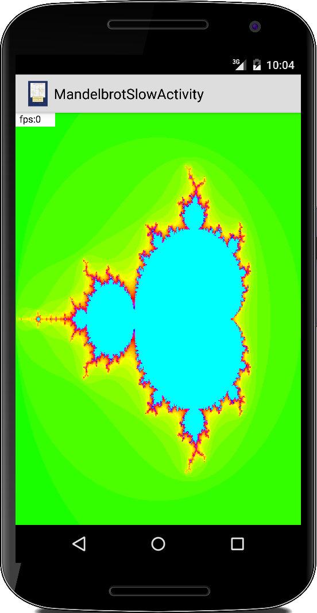

Special Topic: Graphics Performance
Eine Frage, die sich oft bei der Grafikprogrammierung stellt: geht's schneller? Obwohl es keine allgemeine Antwort gibt, wollen wir einige der zugrunde liegenden Regeln kennen lernen, die im Allgemeinen gültig sind. Dazu sehen wir uns vier verschiedenen Methoden an, wie man 50.000 GRects zeichnen kann.
In allen vier Fällen verwenden wir die folgende Aktivität,
public class FastGRectActivity extends Activity {
private final int SIZE = 40;
private final int DELAY = 40;
@Override
public void onCreate(Bundle savedInstanceState) {
super.onCreate(savedInstanceState);
View gv = new FastGRectView(this);
setContentView(gv);
}
}
Lediglich in den Views unterscheiden sie sich. Alle vier Views habe das gleiche Gerüst:
class FastGRectView extends View {
private Paint paint;
private Random rgen = new Random();
public FastGRectView(Context context) {
super(context);
paint = new Paint(Paint.ANTI_ALIAS_FLAG);
paint.setStyle(Paint.Style.FILL);
paint.setStrokeWidth(1);
paint.setTextSize(48f);
}
@Override
protected void onDraw(Canvas canvas) {
long startTime = System.currentTimeMillis();
for (int k = 0; k < 50000; k++) {
...
}
long time = System.currentTimeMillis() - startTime;
paint.setColor(Color.WHITE);
canvas.drawRect(0, 0, 250, 70, paint);
paint.setColor(Color.BLACK);
canvas.drawText("time:" + time, 20, 50, paint);
}
}
Der Konstruktor initialisiert alle Instanzvariablen und das Zeichnen erfolgt in der onDraw() Methode. Um die Zeit zu messen, verwenden wir die Methode System.currentTimeMillis(). Generell sollte so wenig wie möglich in der onDraw() Methode passieren, denn das kostet ja Zeit. Deswegen haben wir das Paint Objekt bereits im Konstuktor erzeugt.
Reference Case: Simple Canvas Drawing Methods
Wir beginnen mit dem einfachsten Art und Weise Rechtecke zu zeichnen, mit der Methode canvas.drawRect():
for (int k = 0; k < 50000; k++) {
int w = rgen.nextInt(SIZE);
int x = rgen.nextInt(getWidth());
int y = rgen.nextInt(getHeight());
paint.setColor(rgen.nextInt());
canvas.drawRect(new RectF(x, y, x + w, y + w), paint);
}
Das ist unser Referenzpunkt. Auf meinem Motorola G4 benötigt dieser Code ca. 1570ms.
Simple Canvas Drawing with a GRect
Als erste Modifikation führen wir eine GRect Klasse ein.
private class GRect {
protected int x, y, w, h;
private Paint paint;
public GRect(int x, int y, int w, int h) {
this.x = x;
this.y = y;
this.w = w;
this.h = h;
this.paint = new Paint(Paint.ANTI_ALIAS_FLAG);
paint.setColor(Color.BLUE);
paint.setStrokeWidth(1);
paint.setStyle(Paint.Style.FILL);
}
public void setColor(int color) {
paint.setColor(color);
}
public void draw(Canvas canvas) {
canvas.drawRect(new RectF(this.x, this.y, this.x + this.w, this.y + this.h), paint);
}
}
Diese Klasse verwendet Instanzvariablen für den Zustand und sie hat auch eine draw() Methode, die für das Zeichnen verantwortlich ist.
In der View Klasse sieht die onDraw() Methode jetzt etwas komplizierter aus, aber nur, weil wir die Erzeugung der GRect-Objekte von dem Zeichnen trennen:
protected void onDraw(Canvas canvas) {
// seperate creation (this part takes about 1250ms)
GRect[] rects = new GRect[50000];
for (int k = 0; k < 50000; k++) {
// create randomly sized rect
int w = rgen.nextInt(SIZE);
int x = rgen.nextInt(getWidth());
int y = rgen.nextInt(getHeight());
rects[k] = new GRect(x, y, w, w);
rects[k].setColor(rgen.nextInt());
}
// from drawing (this part also takes about 1250ms)
long startTime = System.currentTimeMillis();
for (int k = 0; k < 50000; k++) {
rects[k].draw(canvas);
}
...
}
Der Grund für diese Trennung ist, dass unter normalen Umständen die meisten Objekte nur einmal erstellen würden und dann nur gelegentlich ein paar hinzugefügt oder entfernt würden. Das hat aber nichts mit der Grafikleistung zu tun.
Naiv würde man erwarten, dass dieser Ansatz deutlich langsamer sein müsste als unser erster Ansatz. Erstens, weil wir Objekte verwenden und die Erstellung von Objekten teuer ist. Zweitens, weil der Code komplizierter aussieht, was in der Regel mit Langsamkeit übersetzt wird. Aber das Gegenteil ist der Fall: Dieser Code benötigt nur 1250ms, d.h. er ist ca. 20% schneller. Wir lernen also, dass Objektorientierung, wenn richtig angewendet, zu einer Leistungssteigerung führen kann. (Der Grund liegt wahrscheinlich am Prozessor-Cache.)
Canvas Drawing using a Bitmap
Auf fast allen Rechnern sind die einfachen Array Operationen deutlich optimiert. Für die Grafikprogrammierung bedeutet das, dass man bei dem Arbeiten mit Bitmaps idealerweise mit dem zugrunde liegenden Pixel-Array arbeitet. Um das auszuprobieren schreiben wir unseren View etwas um:
class FastGRectView extends View {
...
private int mCanvasWidth;
private int mCanvasHeight;
private Bitmap bitmap;
private int[] bitMapArray;
...
protected void onSizeChanged(int w, int h, int oldw, int oldh) {
if (bitmap != null) {
bitmap.recycle();
}
bitmap = Bitmap.createBitmap(w, h, Bitmap.Config.ARGB_8888);
mCanvasWidth = w;
mCanvasHeight = h;
bitMapArray = new int[mCanvasWidth * mCanvasHeight];
}
...
}
Wir deklarieren eine Bitmap und ihr Pixel-Array als Instanzvariablen. Zusätzlich benötigen wir die onSizeChanged() Methode, in der wir die Bitmap und das Array initialisieren.
Die onDraw() Methode erführt folgende Änderungen:
for (int k = 0; k < 50000; k++) {
int w = rgen.nextInt(SIZE);
int x = rgen.nextInt(getWidth() - SIZE);
int y = rgen.nextInt(getHeight() - SIZE);
drawRect(x, y, w, w, rgen.nextInt());
}
bitmap.copyPixelsFromBuffer(IntBuffer.wrap(bitMapArray));
canvas.drawBitmap(bitmap, 0, 0, null);
In der drawRect() Methode zeichnen wir in das Pixel-Array. Die Methode bitmap.copyPixelsFromBuffer() erlaubt es uns, aus dem Array eine Bitmap zu machen und dann mit der Methode drawBitmap() des Canvas die Bitmap auf dem Bildschirm zu zeichnen.
Die drawRect() Methode ist ein wenig primitiv, da es sich um eine Manipulation auf Byte-Ebene handelt:
private void drawRect(int x, int y, int w, int h, int color) {
int len = bitMapArray.length;
for (int i = 0; i < w; i++) {
for (int j = 0; j < h; j++) {
int idx = (y + j) * mCanvasWidth + (x + i);
if (idx < len) {
bitMapArray[(y + j) * mCanvasWidth + (x + i)] = color;
}
}
}
}
Und, wie lange dauert es? Nun, es dauert 740ms. Das ist doppelt so schnell wie unser ursprünglicher Ansatz.
Canvas Drawing using a Bitmap and a GRect
Können wir es noch besser machen? Betrachtet man unser vorheriges Beispiel, gibt es Hoffnung. Auch hier lagern wir unsere Datenhaltung und das Zeichnen in eine GRect Klasse aus:
private class GRect {
protected int x, y, w, h;
private int color;
public GRect(int x, int y, int w, int h) {
this.x = x;
this.y = y;
this.w = w;
this.h = h;
this.color = Color.BLUE;
}
public void setColor(int color) {
this.color = color;
}
public void draw(int[] bitMapArray) {
int len = bitMapArray.length;
for (int i = 0; i < w; i++) {
for (int j = 0; j < h; j++) {
int idx = (y + j) * mCanvasWidth + (x + i);
if (idx < len) {
bitMapArray[(y + j) * mCanvasWidth + (x + i)] = color;
}
}
}
}
}
Wir stellen fest, dass sie fast identisch zu der vorherigen GRect-Klasse ist.
Das gleiche gilt für die onDraw() Methode:
...
// from drawing (this part also takes about 1250ms)
long startTime = System.currentTimeMillis();
for (int k = 0; k < 50000; k++) {
rects[k].draw(bitMapArray);
}
bitmap.copyPixelsFromBuffer(IntBuffer.wrap(bitMapArray));
// draw bitmap on canvas
canvas.drawBitmap(bitmap, 0, 0, null);
...
Der einzige Unterschied ist, dass wir das Pixel-Array an die draw()-Methode der GRects übergeben und dass wir die drawBitmap() Methode des Canvas Objekts am Ende aufrufen.
Ist es wirklich schneller? 490ms ist die Zeit, die es dauerte. Das ist dreimal schneller als unser ursprünglicher Ansatz! Wenn wir z.B. 25 Bilder pro Sekunde in unserem Spiel haben wollen, bedeutet das, dass wir ungefähr 2000 GRect Objekte pro Frame zeichnen können.
Lassen Sie sich also nicht von Leuten täuschen, die sagen, dass Objekte oder die Objektorientierung langsam ist. Ist sie komplizierter? Nun, am Anfang sieht es so aus. Aber auch das hängt von der Verkapselung ab. Im nächsten Beispiel sehen wir, wie man all dies in eine Bibliothek umwandelt, die der ACM-Grafikbibliothek ähnelt. Versuchen Sie danach, ein Spiel wie BrickBreaker mit den beiden verschiedenen Ansätzen zu programmieren und treffen Sie dann ein Urteil.
Noch ein Hinweis: In unserer Version der ACM-Grafikbibliothek haben wir den Bitmap-Ansatz nicht verwendet. Sie fragen sich vielleicht, warum? Nun, erstens, wenn wir deutlich weniger als 2000 Objekte zeichnen, vielleicht ein paar hundert, dann ist das Speichern nicht ganz so wichtig, weil die Methode bitmap.copyPixelsFromBuffer() etwa 10ms dauert. Zusätzlich bietet die Klasse Canvas viele praktische Methoden wie drawOval(), drawLines() und drawText(), um nur einige zu nennen. Die Implementierung all dieser Elemente in unserem Bitmap-Ansatz nimmt viel Entwicklungszeit in Anspruch. Aber wenn unsere Programme mit vielen tausend Objekten arbeiten müssten, dann würden wir mit Sicherheit auf den Bitmap-Ansatz zurückkommen.
.
Mandelbrot
Auch Mandelbrot Fraktale haben wir schon im zweiten Buch gesehen. Dabei wird einfach die mathematische Gleichung
z_n+1 = z_n * z_n + c
grafisch dargestellt. Den Code können wir fast eins-zu-eins aus dem zweiten Semester übernehmen. Allerdings sollten wir vieleicht erst einmal in Vierer-Schritten durch die Iteration gehen, es stellt sich nämlich heraus, dass es gefühlt ewig dauert bis unser Bild fertig ist.
Ähnlich wie beim GameOfLife Beispiel kann man das Ganze fast um den Faktor zehn beschleunigen, wenn man mit einem Array und einer Bitmap arbeitet, anstelle der drawPoint() oder drawRect() Methode der Canvas Klasse. Dazu definieren wir eine Bitmap und ein bitMapArray als Instanzvariablen:
private Bitmap bitmap; private int[] bitMapArray;
In der onSizeChanged() Methode initialisieren wir die beiden
protected void onSizeChanged(int w, int h, int oldw, int oldh) {
if (bitmap != null) {
bitmap.recycle();
}
bitmap = Bitmap.createBitmap(w, h, Bitmap.Config.ARGB_8888);
mCanvasWidth = w;
mCanvasHeight = h;
bitMapArray = new int[mCanvasWidth * mCanvasHeight];
}
.
Und in der onDraw() Methode berechnen wir das Array, machen daraus dann eine Bitmap und zeichnen die Bitmap auf den Canvas:
public void onDraw(Canvas canvas) {
double xStep = (xMax - xMin) / mCanvasWidth * 1;
double yStep = (yMax - yMin) / mCanvasHeight * 1;
for (double x = xMin; x < xMax; x += xStep) {
int i = (int) (((x - xMin) * mCanvasWidth) / (xMax - xMin));
for (double y = yMin; y < yMax; y += yStep) {
int j = (int) (((y - yMin) * mCanvasHeight) / (yMax - yMin));
bitMapArray[j * mCanvasWidth + i] = function(x, y);
}
}
bitmap.setPixels(bitMapArray, 0, mCanvasWidth, 0, 0, mCanvasWidth, mCanvasHeight);
canvas.drawBitmap(bitmap, new Rect(0, 0, bitmap.getWidth(), bitmap.getHeight()),
new Rect(0, 0, bitmap.getWidth(), bitmap.getHeight()), null);
}
Das geht jetzt schon viel schneller, ca. ein Bild pro Sekunde.
Geht es noch schneller? Die meisten Android CPUs haben inzwischen mehr als einen Core, Quadcores sind heute schon fast die Regel. Bisher haben wir aber in all unseren Programmen immer nur einen dieser Cores verwendet. Wenn wir es schaffen die anderen auch arbeiten zu lassen, dann können wir unser Programm noch mal um einiges schneller machen, je nachdem wie viele Cores unser Gerät hat. Wie das geht sehen wir im Kapitel zu Concurrency.
.